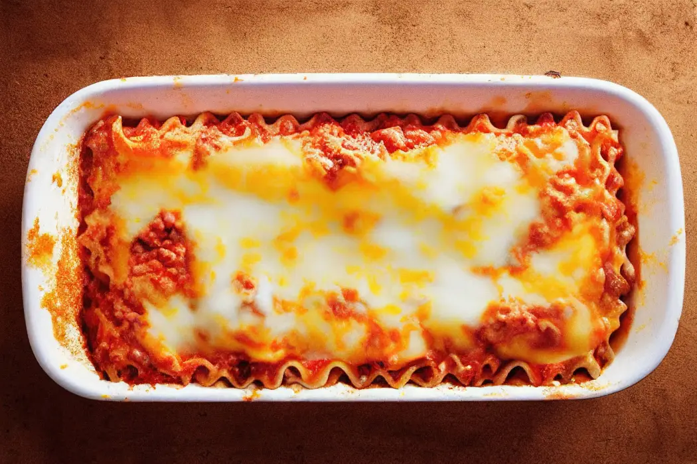
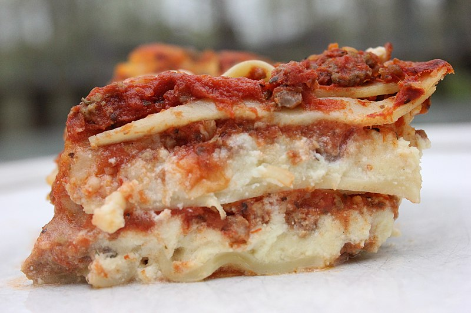

1 / 3

Caption Text
2 / 3

Caption Two
3 / 3

Caption Three
Eat the delicious Lasagna
Eat more
| Amount | Ingredients |
|---|---|
| 1 tbsp | olive oil |
| 1 diced | onion |
| 1 diced | carrot |
| 1 diced | celery stalk |
| 2 finely diced | garlic cloves |
| 250 g | beef mince |
| 250 g | pork mince |
| 1 tbsp | tomato puree |
| 400 g | tin chopped tomatoes |
| 200 ml | beef stock |
| 200 ml | red wine |
| 1 tsp | worchester sauce |
| 9 | lasagna sheets |
| 50 g | parmesan grated |
| 150 g | mozerella grated |
| 50 g | butter |
| 50 g | plain flour |
| 550 ml | semi skinned milk |